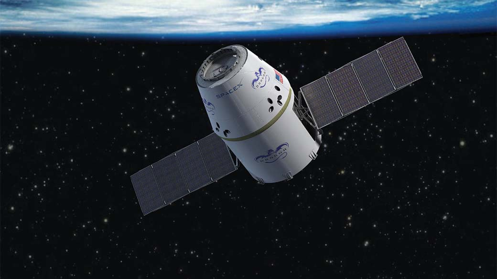

A Esploração espacial
Exploração espacial é o conjunto de esforços do homem que visam a exploração
do espaço e de seus corpos celestes. Enquanto o estudo do espaço, estrelas (dentre outros astros),
é realizada principalmente por astrônomos com instrumentos materiais, a exploração física do
espaço é realizada tanto por sondas robóticas não tripuladas, quanto por voos espaciais tripulados.
Os corpos celestes e astros sempre foram motivo de grande fascinação
na humanidade.[1] Há registros de gregos, mesopotâmicos e astecas descrevendo vários acontecimentos
celestes. [2] Na era contemporânea, vários cientistas deram grandes contribuições para
que o sonho de explorar o espaço pudesse se tornar realidade, como o russo
Konstantin Tsiolkovsky,
o alemão
Hermann Oberth e o estadunidense
Robert Goddard.
Antes e durante a Segunda Guerra Mundial não havia um esforço conjunto que tivesse
por objetivo a exploração física do espaço, mas foi realmente durante a Guerra Fria, com o início
da Corrida Espacial, que os Estados Unidos e a União Soviética
começaram a querer demonstrar superioridade na então inédita exploração do espaço.
Veículo espacial
Artigo foi publicado em 04 de junho de 2020.